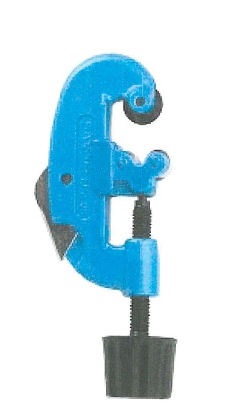
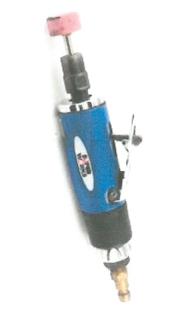
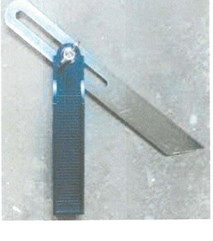
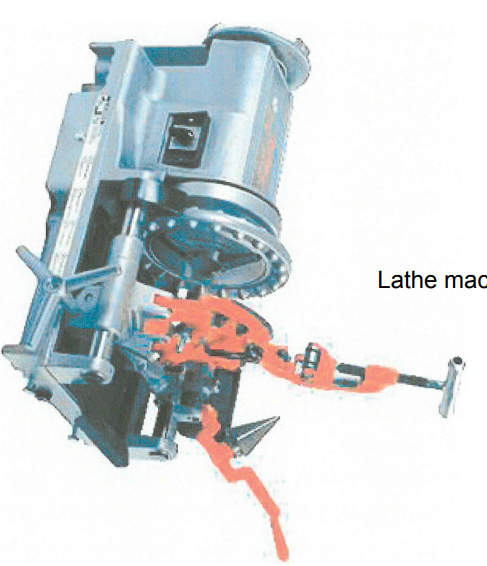
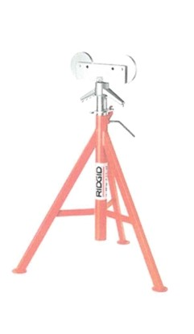
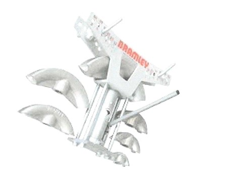
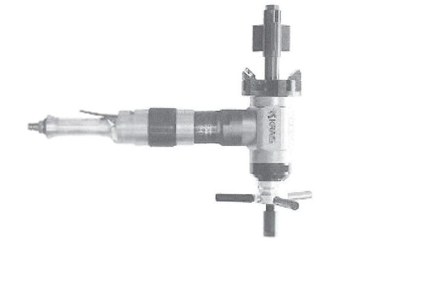

Fitting equipments
- Pipe Cutter
- Pencil grinder
- Angl e Degree finder
- Lathe Marchine
- Pipe Clamp
- Pipe Bender
- Electric Beveling Marchine
 Diecing Marchine
Diecing Marchine
Fabrication and welding is the process of cutting, joining and welding two metals together.
Fabrication and welding is a job been done by professionals mainly Fittersthose who interpretes the drawing, cuts and join the spools
ThenWelders they are those whose duty is to weld. Also amongts them are Quality Assuarance and Quality Control aka QA QC,their duty just as the name implies are to make sure that the job meets or suppases the standard quality.
Jobs are mostly presented in isometric and strctural drawings of which a good fitter must know how to interprete.
In the drwaing contains WPS welding procedureit is the procedure amd the type of welding that is to be carried out and also the type of electrode to used to caryy out the Job
Diecing Marchine